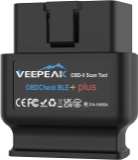
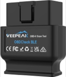
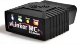
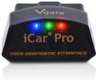
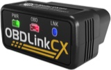
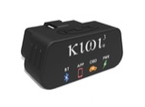
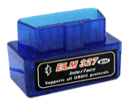

Frequently asked questions
HybridEdge beta · Updated 18 August 2026
*Unless you choose it: anonymous calibration data if you agree during setup, and a diagnostic report if you send one. Never your identity. Details in the privacy question below.
What is HybridEdge?
An iPhone app that answers the question the trip computer won't: what does each drive actually cost? Petrol and electricity together, per trip and per 100 km, with the split between them shown honestly, not averaged into a number nobody can confirm. The rule it's built around: every figure is measured from the car, or it isn't shown.
Which cars does it work with?
HybridEdge was developed and validated on the BYD Denza B5, with its measurements checked against the dash over hundreds of kilometres (battery state agrees within about 0.3%). Testing is rolling out across Denza, BYD, Toyota and Mitsubishi PHEV models, with more to follow. The app's database covers 100+ plug-in hybrids sold in Australia, and any PHEV can use manual logging today. Full automatic readings for new models arrive through in-app calibration: the app learns your car as you drive, and tells you honestly when a value for your model is verified and when it isn't.
Do I need to buy anything?
No. Every core feature works with manual entry: tap Start trip, type the odometer, fuel, and battery figures off your dash, then end the trip the same way. All costs, the logbook, and insights work from that. If you want the car to fill the numbers in itself, a ~$50 Bluetooth OBD-II reader (we test with the Veepeak OBDCheck BLE+) plugs into the port under the steering wheel, and the app records battery, fuel, odometer, and speed continuously while you drive.
Which OBD readers are compatible?
The short rule: HybridEdge works with Bluetooth Low Energy readers that speak the ELM327 command set. If a reader turns out not to be compatible, the app says so clearly on screen, and manual entry always works regardless. Here's the current state of the list:
| Reader | Status | Notes |
|---|---|---|
 Veepeak OBDCheck BLE+ ~$55 |
Confirmed | The tested and recommended reader, validated over hundreds of kilometres of driving. |
 Veepeak OBDCheck BLE ~$45 |
Probably | Same hardware as the BLE+, older command set, covers everything the app uses. |
 vLinker MC+ ~$60 |
Probably | Meets the spec on paper. Not yet verified in the field. |
 Vgate iCar Pro Bluetooth 4.0 ~$35 |
Probably | Meets the spec on paper. Not yet verified in the field. |
 OBDLink CX ~$130 |
Probably | Premium unit, meets the spec on paper. Not yet verified in the field. |
 PLX Kiwi 3 ~$150 |
Probably | Premium unit, meets the spec on paper. Not yet verified in the field. |
| Other BLE ELM327 readers | Probably |
|
 Generic "ELM327 mini" Bluetooth OBD2 (Amazon) ~$11 |
Not compatible |
|
| "OBD Advanced" / HHOBD torch-style (AliExpress, eBay) ~$5 |
A gamble |
|
| OBDLink MX+ ~$180 |
Not compatible | Classic Bluetooth, not BLE. The "works with iPhone" label doesn't apply to this app. |
| Jaycar Response PP2145 ~$109 |
Not compatible | ELM327 data is classic Bluetooth (Android only); its BLE side only talks to the maker's own app. |
| Any Wi-Fi reader | Not compatible | HybridEdge connects over Bluetooth only. |
| Any classic Bluetooth reader | Not compatible | Most bargain "Bluetooth ELM327" dongles are classic Bluetooth, which iPhone apps cannot use. BLE only. |
Help grow the Confirmed list: when a reader connects, the app records which model and firmware it identified as. Drive once with your reader, then send a report from Settings > Diagnostics, and your reader can be added to the table.
Where is the OBD port, and can a reader harm my car?
Look under the dash above the pedals, around the steering column; the socket faces the floor. It's a 16-pin trapezoid about the size of a matchbox, and some cars hide it behind a small flip-down cover. The reader stays plugged in permanently.
The port is designed for exactly this kind of accessory. HybridEdge only asks read-only questions the same way a mechanic's scan tool does (battery level, fuel level, odometer, and speed). It cannot change settings, clear fault codes, or modify your car in any way. That said, OBD readers are third-party hardware, so if you're unsure how an accessory sits with your warranty or insurance, ask your dealer before plugging one in.
What about my data and privacy?
There's no account and no sign-up because there's nothing to sign up to. There are no ads either, and there never will be. Your trips, costs, and locations are stored only on your phone, and your driving history never leaves it. On its own the app only downloads public reference data: the vehicle-specification list and the Australian electricity-plan list, neither containing anything about you. One thing is optional, prompted during setup: the app asks to share anonymous calibration readings while your model is being calibrated (the car's raw value, the dash figure you typed, and your car model, never your trips, location or identity) so it can build accuracy for other owners of your make and model. The readings are deleted once your model's calibration is published, and sharing stops by itself at that point. It's preselected because the whole fleet benefits, and one tap turns it off. The only other thing that can leave your phone is a diagnostic report, and only if you choose to send one when something looks wrong. The full detail is in the privacy policy; it's short because there's so little to say.
What iPhone do I need?
Any iPhone from the iPhone 11 or iPhone SE (2nd generation) onward, running iOS 26.4 or later. If your phone has taken its updates in the last year, you're fine.
What do the permissions do?
Bluetooth talks to the optional OBD reader. Without one, the app simply stays in manual mode. Location is optional and records trip routes and start/end place names for your logbook, stored on-device. Notifications power the trip prompts: "log a new trip?" when the car starts, and end-trip options when you switch off.
Why does fuel show as a percentage?
The dash's kilometre range is the car's own adaptive guess and can't be matched by any app honestly. The tank percentage is what the car actually reports, so that's what HybridEdge uses, everywhere.
Why is the app dark?
The beta ships dark-only; it's designed around in-car readability. A proper light theme is on the roadmap.
I'm not in Australia. Can I still use it?
HybridEdge is built for Australia and New Zealand for now. The measuring side works in any country, but the electricity plan database is Australian, so overseas users type in their own power rate instead of picking a plan. Costs come out in whatever currency you type your prices in. The app does speak strictly litres and kilometres, so it's an awkward fit for the US until proper international support arrives. Opening up to more countries is on the roadmap after the Australian launch.
How do I join the beta?
Testing runs through Apple's TestFlight. Tap the beta link on the home page and you're in. Spots in each group are capped so the app gets proper attention per car. It's free during the beta.
I found a bug. What's the best way to report it?
Three ways, best first: tap "Upload report" in Settings → Diagnostics (one tap, sent straight to the developer, coordinates rounded and place names masked by default); take a screenshot inside the app and use TestFlight's built-in feedback (it attaches useful diagnostics automatically); or email support@hybridedge.com.au. Every report gets read.
When will it be on the App Store?
When the beta proves it's ready. Accuracy comes first: the app ships when its numbers can be trusted, not before.
Contact
Anything else: support@hybridedge.com.au